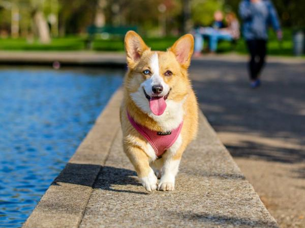
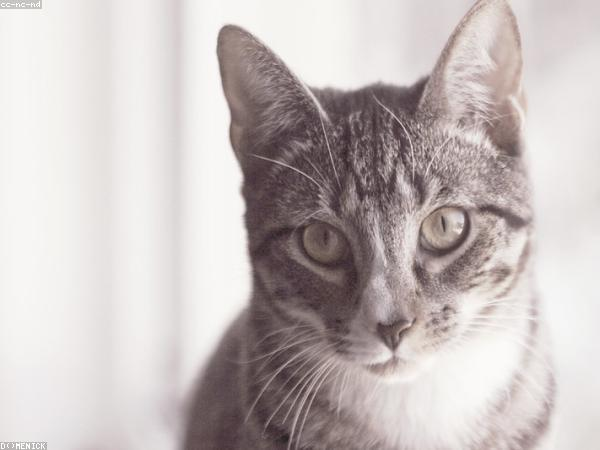
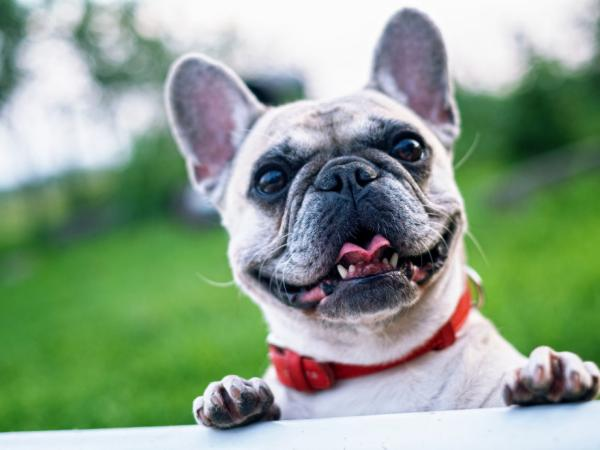
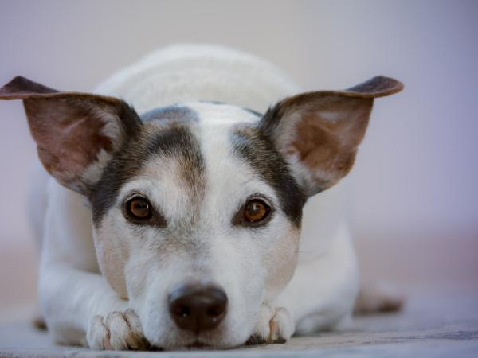
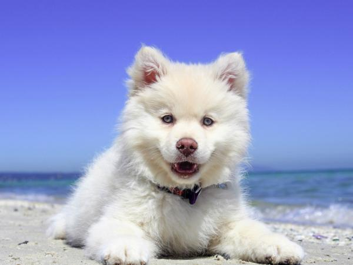
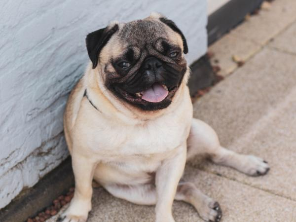
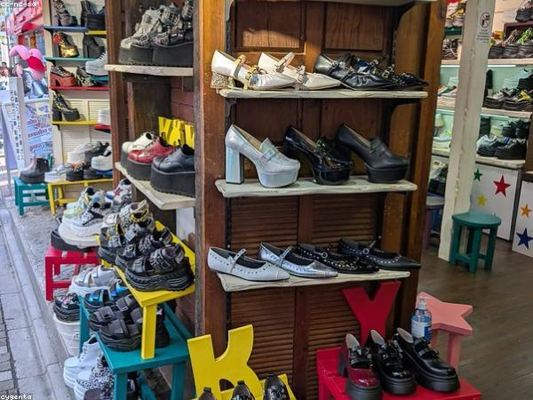
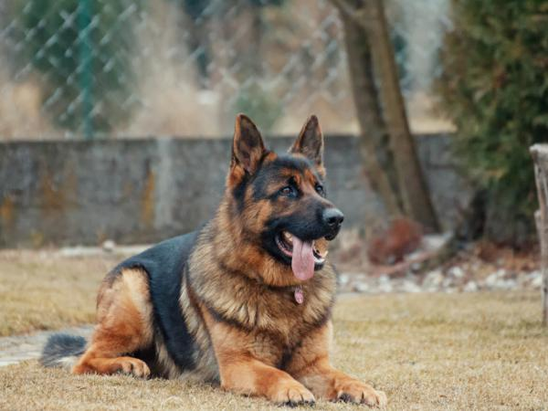

Andrea Salas
Luna cumplió 3 años hoy 🎉 le regalamos un juguete nuevo y no lo ha soltado en toda la tarde 🐶

48 me gusta 12 comentarios
Entra para ver las novedades de tu comunidad.
¿Nuevo en Pawly? Crea tu cuenta
Luna cumplió 3 años hoy 🎉 le regalamos un juguete nuevo y no lo ha soltado en toda la tarde 🐶

Toby ya está listo para buscar familia 🏡 tiene 2 años vacunas al día y adora a los niños 🙏 si conocen a alguien compartan


Luna cumplió 3 años hoy 🎉 le regalamos un juguete nuevo y no lo ha soltado en toda la tarde 🐶
3 personas · 2 mascotas · 8 publicaciones

Mascotas cerca de Chacao, Caracas · ordenadas por distancia

6 km
9 km
12 kmTranquilo juguetón y muy apegado 🐾 se lleva bien con niños y otros perros, tiene sus vacunas al día y está esterilizado. Lo rescatamos en La Candelaria hace un año y ya está listo para su hogar definitivo 🏡
Tenga patio o salga a caminar a diario y esté en Caracas o los Valles del Tuy para poder hacer la visita previa
Se abrirá un chat con Luis para que coordinen la visita. Cuéntale por qué quieres adoptar a Toby.
Hoy
Ayer
Dueño de Mía y Simón 🐶🐱 voluntario en rescates los fines de semana

En adopciónSimón se apropió de la caja del televisor nuevo y no la suelta 😹
| Usuario | Correo | Mascotas | Estado | Acciones |
|---|---|---|---|---|
Andrea Salas | andrea.salas@gmail.com | 1 | Activa | |
Luis García | luis.garcia@gmail.com | 3 | Activo | |
Pedro Ramírez | pramirez88@gmail.com | 2 | 3 reportes | |
Darvin Hernández | darvin.hernandez@gmail.com | 2 | Activa | |
Daniela Bracho | dbracho@gmail.com | 0 | Vetada |
Escribe el correo con el que te registraste y te enviamos un enlace para crear una contraseña nueva.
El enlace vence en 30 minutos. Si no lo ves, revisa la carpeta de spam.
Mía y Simón por fin se llevan bien 🐶🐱 después de dos semanas durmiendo juntos @laurabarreto tenías razón
Amante de los gatos, tengo dos y quiero adoptar un tercero 🐱
Nala ya tiene sus vacunas al día 💉 lista para conseguir familia
Vendo cachorros de raza escríbeme al 0412…
Cuéntanos qué está mal. El equipo de Pawly lo revisa y no se le avisa a la persona.
Feliz cumpleaños Luna 🎂🐾 qué linda se ve